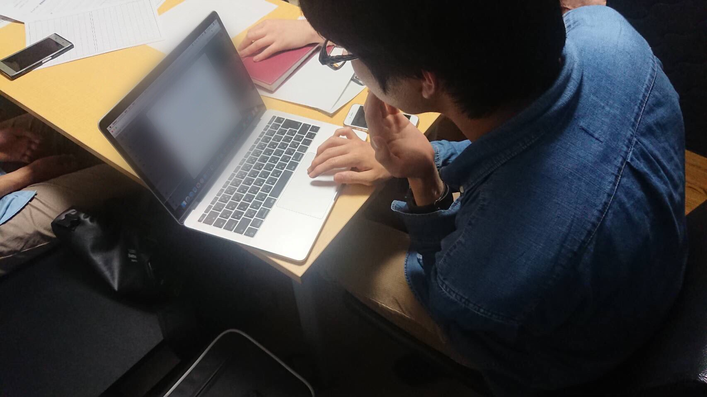

立命館大学情報理工学部2回生の根津泰之（ねづやすゆき）です。
普段はおとなしい性格ですが、時に行動力を発揮します。
現在は未来電子でプログラミングの学習に取り組んでいます。
高校の時はプログラミングには全く関心はなく、大学で初めて触れました。
学業はもちろん、学内外での学生団体の活動、そして未来電子でのインターンと、多彩なことに取り組んでいます。
大切にしていることは、幸せに生きること。そして、他人と自分の両方が幸せに感じるにはどうすればいいか日々考えています。
実務業務に入るために、プログラミングの学習を行なっています。主にHTML&CSS、Pythonを勉強しています。
毎年12月に行われる大学生の放送の大会を企画、運営する団体です。
情報理工学部に来た留学生に観光地や日本文化を紹介する活動をしています。
オープンキャンパスの運営や受験相談をする団体です。
昔から鉄道に乗るのが好きだった。中学や高校では少し遠のいたが、スーツさんの動画を見て再び火がついた。
鉄道で中国地方1周、東日本1周を成し遂げる。
なお、旅行大好きだが海外経験はない。
大学受験ネタが好きで、(元)大学生のYouTuberの動画をよく観る。